| Twitcher - Python, HTML, CSS, JavaScript, RegEx, Bootstrap, Flask Final project for Girls Who Code. Takes the Twitter API and pulls all the tweets from an entered Twitter handle. Then uses the selected filter which is programmed with Regular Expressions to filter through the data. All tweets containing words from the filter will then be outputted with the word it was flagged for at the end. The top will also state how many times the inputed user was flagged for the filter. | 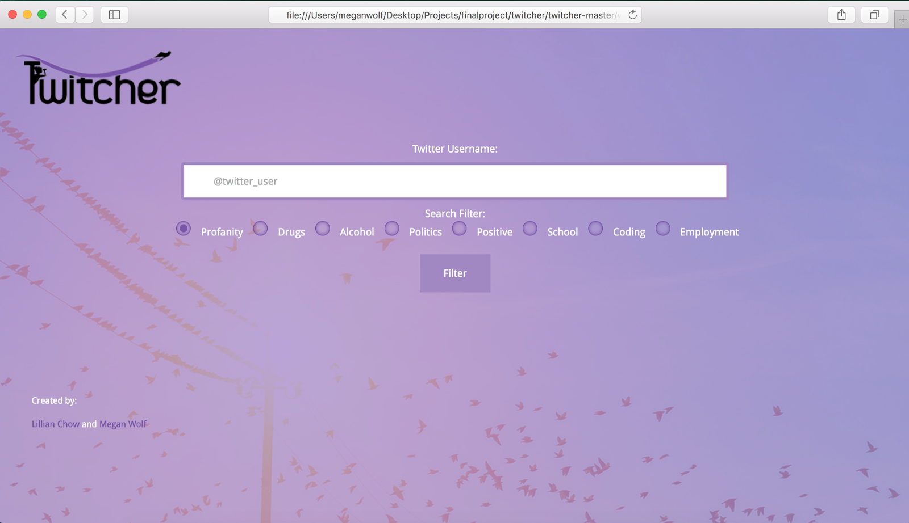 | Robot Whiskers - Arduino Two whiskers were attached to a robot which were used as sensors to trigger a response. The response programmed is when either sensor is hit, the robot will back up for one second, turn 90 degrees in the opposite direction that the sensor was hit, and then continue straight until another sensor is hit. | 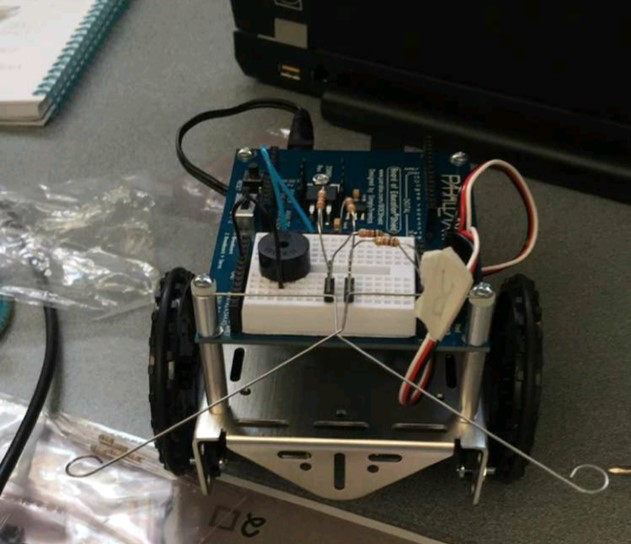 | Robot Dance - Ardunio An Arduino board attatched to a robot was programmed to do the movements of the cupid shuffle according to the music. The robot was choreographed in a specific order to go in any sort of direction. We then decided make the robot into Tom and Jerry, thus the mouse costume on the robot. | 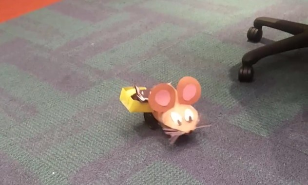 | Runner Game - Python Pygame and Pillow were used to program a runner game in Python. The avatar, in this case a panda, runs along the city while the city scrolls. The avatar can be controlled by the mouse, the arrow keys on the keyboard, or any other keys on the keyboard (would require changing code). | 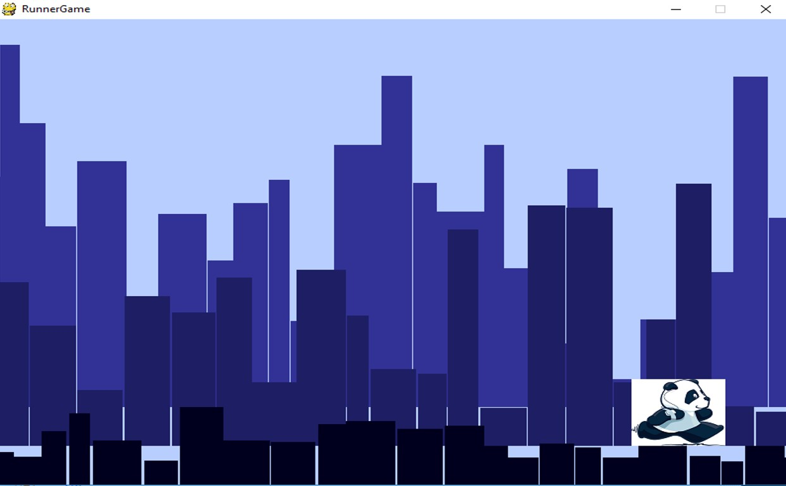 |
| City Scroller - Python Pygame was used in creating this program. The three different levels of city are set at random heights, widths, and speeds. The building and background colors can be easily modified, as well as the speeds and sizes of the buildings. It is also very easy for the background to incorporate falling snow or other variables. | 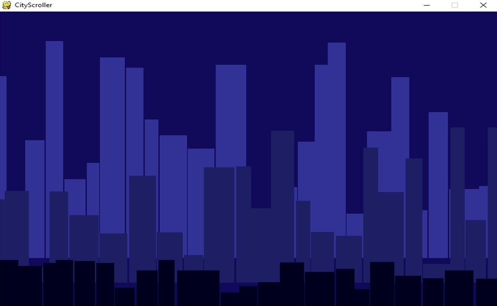 | Bouncing Ball - Python Pygame and flash were used in creating this. The ball is flashing different colors constantly, while the ball is also bouncing off of the four walls of the screen. The second ball in the screen has been modified to remain black as well as have two smaller circles which correlate to the circle and bounce with it as if the three circles made up a character. | 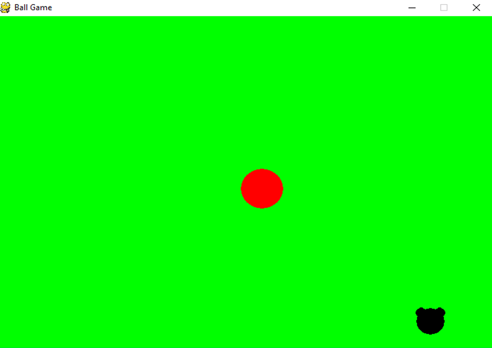 | Snow animation - Python Pygame was used to bring this animation to life. The varying sizes of white circles each fall at different speeds, a random integer set between perameters. The size of the snow that falls is also a random interger between set parameters. The snow falls in an endless loop, and can be set as any background. | 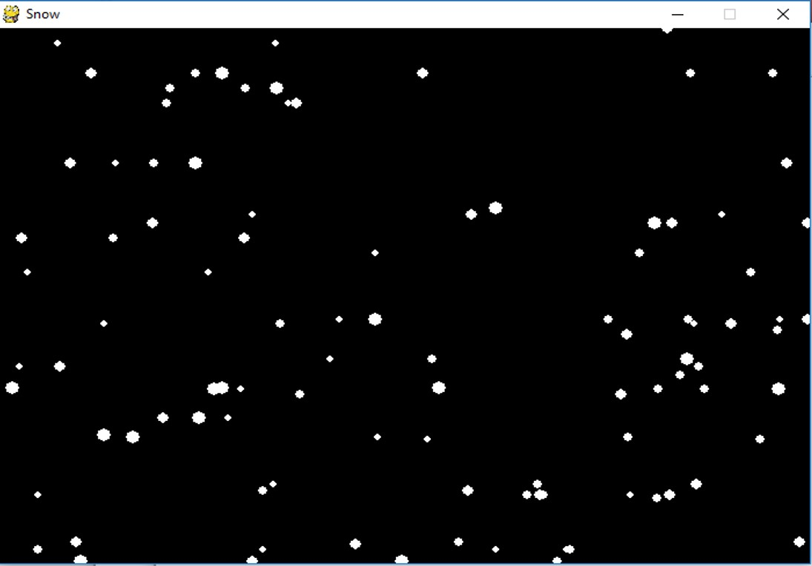 | ||
| Obamicon - Python In order to create the RGB color change into the select colors, the library Pillow was used. The pixel read out was used to change the colors based on intensity of the original pixel. If the orignial pixel was between certain parameters, then the color would be then translated into another corresponding color. The colors can easily be adjusted according to RGB. | 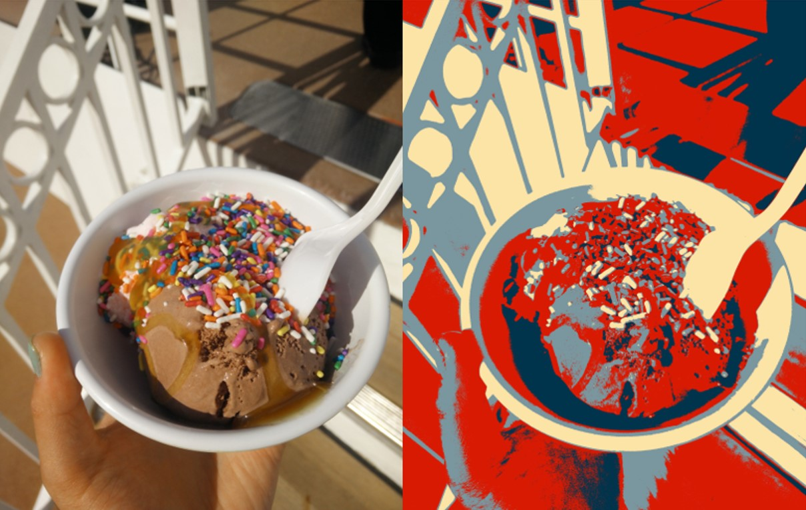 | Jukebox - Scratch All three songs stored in the Jukebox were hand made utilizingi loops and the notes that can be played from Scratch. The Jukebox has the feature of adding a title to the end of the list, inserting(appending) the list to place the song at the beginning of the list, stopping the current song, playing the song, or clearing the list. | 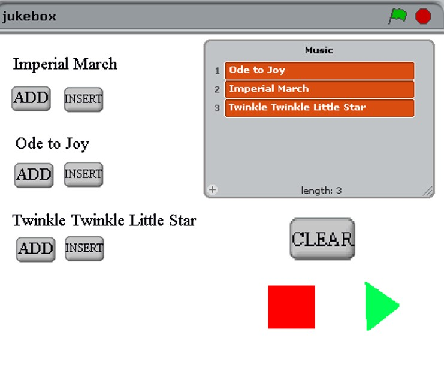 | Pig - Scratch The game PIG is a game of chance. Player 1 rolls the dice and gets any number between 1 and 6. If the player gets a 1, then their turn is now over and their score goes to zero. After every turn, the player can chose to hold or to roll again. The player holds by pressing the red button on the screen, and their score will transfer to their total score. If not, the space bar is pressed and the dice will roll again. The score will continue to add to the player score, and only add to the total player score when the hold button is pressed. The first player to a score of 100 points will win the game. | 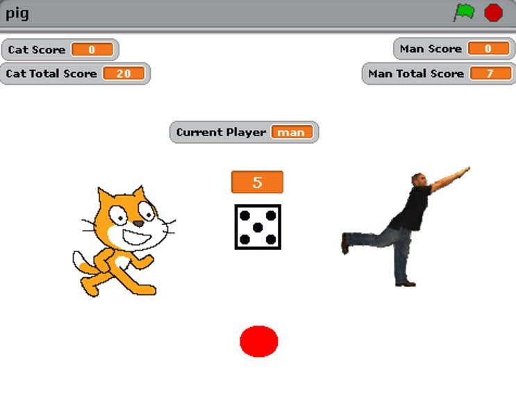 | ||
| Paddle Ball - Scratch The game works such that if the ball hits the top, right, or left sides of the screen, it will bounce off of it. In order for the ball to bounce off of the bottom, it must hit the brown paddle. The paddle is controlled by the user's mouse. When the ball hits the bricks in the game, the bricks will disappear and the ball will bounce off the brick that it hit. | 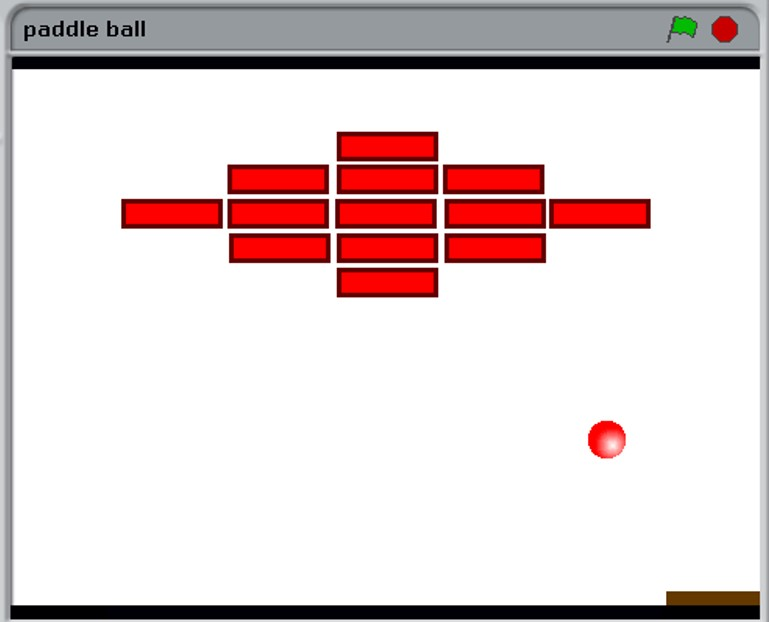 |